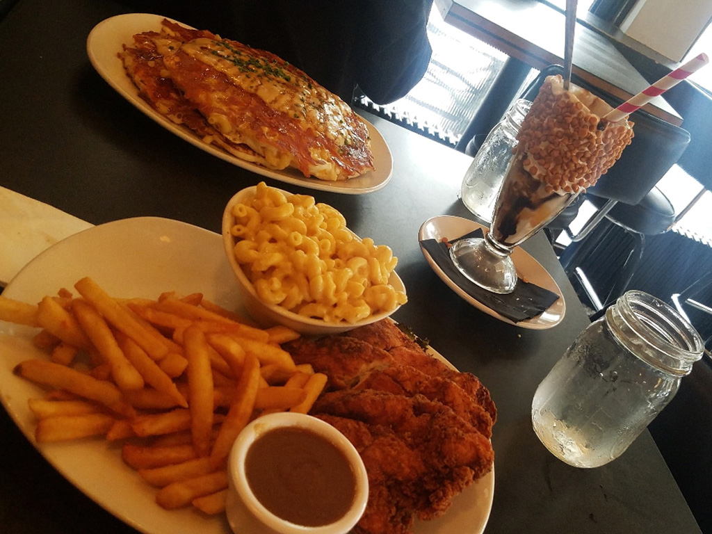

Last Food Venture
-Mom's Kitchen and Bar-
Hungry for some American Food? Like Milkshakes with your food?. Then you're at the right site to suggest you Mom's Kitchen. Totally worth going and seeing how cool the theme inside the restaurant is.
Not only do they serve amazing food but they serve amazing adult drinks only 21+

This image was taken by Guadalupe Olvera, BMCC Student.
MY Favorites Menu:
- Chicken and Bacon Waffle: I know this may sound odd but it is actually good. Contains; Fried Chicken breast and a big waffle with baked bacon and cholula honey and also a very cheesy sauce.
-
- Steak and Eggs: Contains; The obvious Steak and eggs with sides of your choice.
-
- Palmito Salad; I don't usually eat salad but in this case I did. Contains; Mandarin Oranges, tomato, avocado with citrus vinaigrette.
-
- Before you go definitely try out their Milkshakes - Strawberry Shorty and Mr. Fluffepagus .
-> Where to find Mom's Kitchen and Bar in Queens?
(33-01 31st Ave, Astoria, NY 11106)
Still hungry for something else? Perhaps dessert?
Please click on Dessert for dessert a dessert suggestion.
Full belly? Click on NYC food Ventures
to redirect